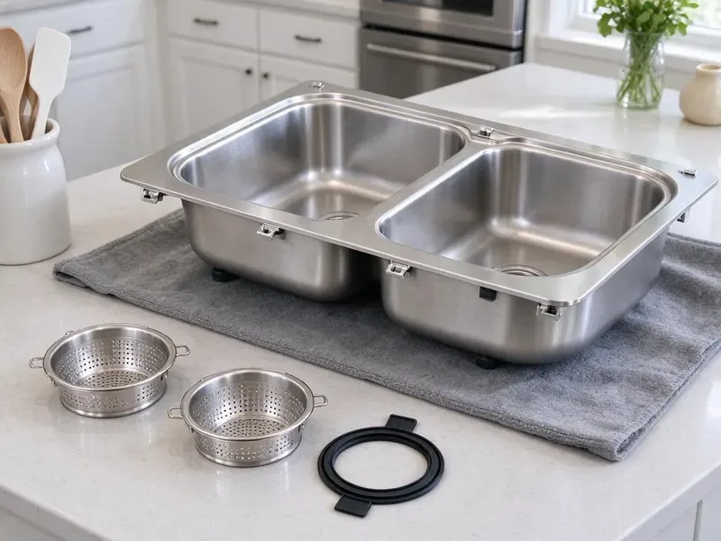

Kitchen Sink Installation in Winooski, VT
Need a new kitchen sink installed in Winooski, VT? CKV Plumbing provides reliable, professional service for all types of kitchen sinks.
- Clear pricing
- Farmhouse and Undermount Pros
- Licensed, Insured Plumbers
- Licensed, insured plumbers
Need a New Kitchen Sink Installed in Winooski, VT?
Call CKV Plumbing today for a free estimate and professional service.
Your Go-To for Kitchen Sink Installation in Winooski, VT
CKV Plumbing specializes in kitchen sink installation, ensuring your new fixture is plumbed correctly and functions perfectly from day one. We handle everything from basic stainless steel models to complex farmhouse sinks, always following local plumbing codes here in Vermont.
Our expertise includes:
- Install undermount, farmhouse, drop-in and workstation sinks
- Replace corroded shutoff valves with quarter-turn stops
- Plumb double-bowl continuous waste with disposal and dishwasher

Additional Kitchen Plumbing Services in Winooski, VT
Our kitchen plumbing services in Winooski, VT cover sinks, disposals, dishwashers, and grease traps so your kitchen stays clean, safe, and fully functional.


Customers
Why Choose CKV Plumbing for Kitchen Sink Installation in Winooski, VT?
Choosing the right plumber for kitchen sink installation is key for preventing future leaks and making it last. Our team at CKV Plumbing brings years of dedicated experience to every job.
- Quality Materials, We use only high-grade sealants, pipes, and connectors to deliver a long-lasting and leak-proof kitchen sink installation.
- Full Hookups, Faucet, disposal, dishwasher and filter lines can be installed in one visit.
- Quality Workmanship, We deliver a precise, leak-free installation, using durable parts for lasting performance in your kitchen.
Citywide Coverage
No matter where you are in Winooski, VT, CKV Plumbing provides dependable kitchen sink installation services. We cover the entire area, providing quick response times and consistent quality for all our customers.
Experienced Team
Each plumber at CKV Plumbing is well versed in the details of kitchen sink installation, including proper sealing, drain assembly, and faucet hook-ups. We ensure every job is done right the first time for our Winooski customers.
Safety-First Approach
At CKV Plumbing, we meticulously follow all local and state plumbing codes during every kitchen sink installation. This commitment to safety protects your home and means your new sink operates reliably without any compliance issues.
Trusted Certified Winooski Plumbing Services Professionals
At CKV Plumbing, we take pride in providing certified plumbing services throughout Winooski, VT. Backed by recognized industry credentials, our experienced plumbers combine technical skill with genuine customer care. Whether it is repair, installation, or maintenance, we follow strict safety and quality standards to deliver lasting results you can trust.
Call Us Now PHCC Plumbing Contractor Recognition
PHCC Plumbing Contractor Recognition Better Business Bureau (BBB) Accreditation
Better Business Bureau (BBB) Accreditation Angi Certified Pro
Angi Certified Pro ISO 9001 Quality Management Certification
ISO 9001 Quality Management CertificationDependable Kitchen Sink Installation Services in Winooski, VT
Composite Sink Installation in Winooski
Composite sinks, made from materials like granite or quartz composites, offer excellent durability and a wide range of colors to match your kitchen decor. Installing these sinks requires careful handling to prevent damage and ensure a perfect fit. Our plumbers in Winooski are experienced with composite sink installation, using the right tools and techniques for secure mounting and sealing. We make sure all drain and faucet connections are tight and leak-free, providing you with a long-lasting and attractive kitchen fixture.

Kitchen Sink Installation Cost Factors in Winooski, VT
A drop-in sink swap costs less than an undermount on stone or a farmhouse sink with cabinet reinforcement. Adding a disposal, moving the drain or replacing old galvanized stubs adds time. We price the plumbing clearly and separately from the countertop. You know the full cost before work begins.
Undermount Kitchen Sink Installation in Winooski
Undermount sinks need strong clips and adhesive to stay attached to granite or quartz. We mount the bowl, seal the rim with silicone, and support it while the adhesive sets. Then we install strainers, traps and supply lines. A proper undermount install helps prevent gaps and leaks along the counter edge.
Drop-In Kitchen Sink Installation in Winooski
Drop-in sinks rest on the countertop with a rim, making them a good choice for laminate and tile. We check the cutout size, seal the rim, and tighten mounting clips evenly. This is usually the fastest and most affordable kitchen sink upgrade. It also works well in rentals and older homes.
Farmhouse Sink Installation in Winooski, VT
Farmhouse or apron-front sinks add a striking look to any kitchen, but their installation requires specific expertise due to their weight and unique mounting requirements. CKV Plumbing provides careful farmhouse sink installation, ensuring the sink is adequately supported within your cabinetry and properly aligned with your countertop. We carefully manage the plumbing connections, which can differ from standard sinks, to prevent leaks and ensure efficient drainage. This focused service gives you a beautiful and functional focal point for your kitchen.
New Construction Sink Plumbing in Winooski, VT
For new home builds or major kitchen renovations in Winooski, VT, proper rough-in plumbing for kitchen sinks is critical. CKV Plumbing works with contractors and homeowners to install all necessary drain lines, water supply lines, and vent piping according to blueprints and local codes. We ensure the plumbing is positioned for your chosen sink and faucet, preventing costly adjustments later. Our meticulous approach gives you a solid foundation for your kitchen's plumbing system.
Emergency Sink Replacement in Winooski
A sudden sink failure, such as a severe crack or burst pipe, can bring your kitchen to a halt. CKV Plumbing provides emergency sink replacement services in Winooski to restore your kitchen's functionality. We can usually provide same-day installation for common sink types, helping you mitigate water damage and disruption. Our team works fast to disconnect the old, damaged sink and install a new one, making sure all essential plumbing is reconnected securely.

Sink & Garbage Disposal Integration in Winooski, VT
When installing a new kitchen sink, it's often the perfect time to upgrade or install a new garbage disposal. CKV Plumbing connects new garbage disposals, including InSinkErator and Moen models, with your new sink. We ensure all electrical and plumbing connections are safe and secure, providing a fully functional waste system for your Winooski, VT kitchen.
Kitchen Sink Installation Near Me in Winooski, VT
Our plumbers are familiar with the unique plumbing challenges and building styles found across Winooski, VT. We pride ourselves on providing dependable, high-quality kitchen sink installations right where you need them, backed by our commitment to customer satisfaction.
When your countertops are going in, you need a plumber who shows up on schedule. We work in Winooski every week and can coordinate with your fabricator. That keeps your kitchen project moving.
CKV Plumbing at a Glance
- Fully licensed plumbing team covering Winooski, VT
- Same-day appointments and 24/7 emergency response
- Upfront, flat-rate pricing before work begins
- 4.8-star rated by 553+ Vermont customers
Winooski Map
Winooski Information
- Population
- 8,251
- Area codes
- Local
- Service area
- Winooski and communities within 40 miles
- Nearby
- Burlington, Essex Junction, South Burlington, Shelburne
A long, cold heating season is the defining stress on Vermont plumbing, with months of freezing nights and repeated freeze and thaw cycles. Rocky glacial soil and ledge are common across Vermont, which can make digging for water lines, sewer repairs or septic work slow and costly.
Expert Services
Trust our professionals for reliable CKV Plumbing solutions in Winooski, VT.
Our Specialized Plumbing Services in Winooski, VT
At CKV Plumbing, we provide a complete range of plumbing services across Winooski, VT. From leak detection to full system installations, our team ensures fast, precise, and affordable service for both residential and commercial properties. Explore our core services below:


How Our Kitchen Sink Installation Process Works in Winooski, VT
We keep kitchen sink installs organized and on time.
Request a Quote
Call us at (802) 209-5139 or fill out our online form to schedule an appointment. We'll discuss your sink installation needs and provide a clear estimate.
Site Preparation
Our team will arrive on time, prepare the workspace, and carefully remove your old sink if applicable. We take care to protect your countertops and cabinets.
Precise Installation
We expertly install your new sink, securing it properly and connecting all plumbing components. This includes the faucet, drain, and any garbage disposal units.
Frequently Asked Questions About Kitchen Sink Installation in Winooski
The cost of kitchen sink installation in Winooski, VT usually ranges from $200 to $600 for labor, depending on the complexity of the job, sink type, and any necessary modifications. This does not include the cost of the sink itself. For a precise quote, contact CKV Plumbing.
CKV Plumbing can install all common types of kitchen sinks, including stainless steel, cast iron, composite, fireclay, and copper. We handle various mounting styles like top-mount, under-mount, and farmhouse (apron-front) sinks, delivering a professional fit for any material.
CKV Plumbing stands behind our workmanship. We offer a warranty on all our kitchen sink installations, covering labor and ensuring that your new sink is installed correctly and functions without issues. Details of the warranty will be provided with your service agreement.
Most installs take three to five hours. Undermount sinks may need time for adhesive to cure before the drain is fully loaded.
A like-for-like replacement usually does not. Moving drain lines or adding a new sink location may require a permit, depending on your local jurisdiction.
Yes. We can install the faucet, disposal, dishwasher hookup and filtered water line on the same trip.
Top-mount (drop-in) sinks sit on top of the counter, with a visible rim, and are generally easier to install. Under-mount sinks are installed beneath the counter, creating a seamless look, but require more complex sealing and support for a secure installation.
In most cases, replacing an existing kitchen sink with a similar type does not require a permit in Winooski. However, if you are relocating the sink, altering major drain lines, or making significant changes to the plumbing system, a permit may be required. We can advise you on local code requirements.
What People Are Saying About Our Plumbing Experts?

Laura S.
I scheduled a water heater replacement, and the team made the process smooth and affordable. The new unit works perfectly, and they cleaned up after completing the job.
Water Heater Replacement · Winooski, VT
Emily R.
I called CKV Plumbing for plumbing repair, and the technician was fast, polite, and thorough. They explained the problem clearly and fixed it the same day. I will definitely hire them again. Highly recommended!
Plumbing Repair · South Burlington, VT
Robert G.
The trenchless sewer replacement saved our front yard. They walked us through the camera inspection footage first so we knew exactly what we were paying for.
Sewer Line Replacement · Middlebury, VT
Daniel K.
A pipe burst at 11 pm and they actually answered. The plumber showed up within the hour, shut everything down, and had us back to normal the next morning. Could not ask for more.
Emergency Plumbing · Winooski, VT
Mark T.
When our office needed drain cleaning, CKV Plumbing provided quick, reliable service. The plumber arrived on time and made sure every drain flowed perfectly before leaving. Very satisfied.
Drain Cleaning · Essex Junction, VT
Patricia H.
We had a slab leak that two other companies could not find. CKV Plumbing located it in under an hour, explained our options, and the price matched the quote to the dollar.
Slab Leak Repair · Middlebury, VT